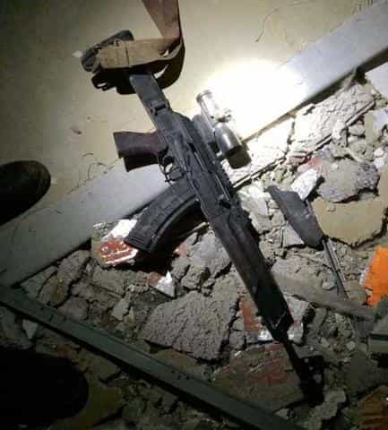

"You know, walk the earth, meet people... get into adventures."


This appears to be the summer of violence. After Islamic fundamentalist slaying of homosexuals in Orlando, and two police killings of indeterminate justification of black men in two different states in one week, we now have a sniper who has killed multiple policemen during a “peaceful” Black Lives Matter “protest” in Dallas. While it is a cynical—but perhaps accurate—view to take that there always seems to be a tragedy poised right after a political scandal to redirect our attention from their shame, what I’d like to focus on today is the different responses the narrative has for killings with guns in the United States depending on the demographic makeup of the shooter, and the target.
When we examine the three big media shootings of the past month, we can see a profound difference in the media coverage and the political response of Barack Obama, Inc, and his chosen successor, Hillary Clinton. I become more convinced with each tragedy that the Democratic modus operandi to a shooting tragedy is one sympathetic tweet as soon as possible, one statement condemning the violence the next day, then unceasing calls for gun control until the next tragedy.

However, although these shootings were all senseless violence, and all resulted in lost American lives, and one should think that that would mean that perhaps a common thread of “we have a lot of unhappy people, maybe we should fix our narcissistic, autistic, overmedicated society into something resembling humanity once again,” we instead bear witness to how the political regimes in this country can either use, or not use, each of these tragedies to their best interest, and so we see a different response to each.
On June 12th, Omar Mateen shot up a gay bar in Orlando, Florida, using a Sig Sauer MCX carbine and a Glock 17 pistol. While there still remain many questions about his motives regarding how he could be a fundamentalist Muslim with allegiance to ISIS and supposedly gay at the same time, and also many questions about just how many people were killed by the Orlando Police Department as they stormed the place, one thing about which there was no question was that this was a prime candidate for the left’s gun control agenda, complete with clueless celebrity testimonial.
No threat to anyone, except maybe the singer without pants.
The AR-15 platform rifle was immediately blamed, even though that’s not the right gun, and somehow the ubiquitous Glock on his hip and bombs on his back escaped notice. Even though sharp criticism and no yielded ground was given to the left, citing the fact that Mateen HAD been denied sales of guns and was reported to the FBI, and that he has also independently been investigated by that same organization, the gun control efforts continued until the media spotlight shifted to the poor souls in the Istanbul bombing and fizzled against the obvious point that gun control would not stop a bombing in a country where guns are already illegal.

STILL not an AR-15
The takeaways from this event’s response is that the left can’t tell the difference between guns, FBI investigations aren’t worth shit, and they seem to be surprisingly OK with Islamic terrorism.
On Tuesday, July 5th, Alton Sterling, an African American citizen of Louisiana, convicted criminal, sex offender, and allegedly a Bloods gang member, was shot and killed by police outside a convenience store where he sold CDs. Video from witnesses show Sterling, on his back, pinned by two officers, where he is then shot and subsequently dies.

Two videos exist of this shooting, both from citizens. The body cameras of both police officers fell off, either intentionally or not, and are expected to not provide good footage.Multiple witness reports conflict, but apparently Sterling had a gun, was not pointing it at anyone, and had surrendered, and was restrained, by the time he was shot.
On July 6th, Philando Castile, an African American citizen of Minnesota and apparently a Crips gang member, was shot to death by a policeman through the window of a car after he and his girlfriend were pulled over because he matched the description of a person suspected in a robbery for whom there was a BOLO.
Castile was shot as he ostensibly reached for his ID. His girlfriend uploaded video of the aftermath to Facebook, so what caused Castille to be shot is still unknown, although when the guy is a full on Crip, and resembles an armed robbery suspect, that’s somewhat indicative. What’s interesting is that the police snatched her phone, deleted the video, and it only came back later with a graphic content warning, and who knows how much of the critical part deleted.
These two shooting events, especially since they became shared online nationwide, sparked immediate BLM style protests in multiple cities protesting white cops shooting black men out of hand with multiple arrests resulting, further blurring the line of Black Lives Matter between activist group and domestic terrorist organization. Both of these men were shot while apparently surrendering, and both were killed by the police via their sidearms.
The response by the Narrative did not really have much chance to get up to steam before the events in Dallas less than 48 hours later.
On the night of Thursday, July 7, during a Black Lives Matter protest in Dallas, an African American man, Micah Johnson, opened fire with a “military style semi-automatic weapon” (per news sources) and shot 14 people, including the murders of 5 police officers, and was later killed by a bomb robot as he holed up in a standoff with the police.
Johnson reportedly had many magazines of ammunition strapped to his body, and the initial reports had him as using a SKS, which is a contemporary and slight predecessor to the AK47. Semiautomatic only, and rather hard to trick out, the AK outshines the Semiautomatic Carbine System of Simonev (SKS).
However, more recent information shows that the rifle actually used was a Saiga AK74 model. Saiga is the brand under which Izhmash, the Russian company that makes the actual Russian military rifles, and has for years, exports rifles and shotguns with the Kalashnikov action. Semiautomatic only, and in “sporterized” configuration, they typically lack pistol grips and come with small magazines. Due to legislation in years past, AKs are banned from coming in with “evil features,” however, US industry supplies the gap in parts to convert them.

Johnson’s AK seems to be a Century Arms conversion, using some Tapco, Magpul, US Palm, and other US accessories. Saiga’s come in a lot of calibers, most commonly being the 7.62×39 native AK47 Soviet round, and the AK74 5.45×39 modern military cartridge, although you can get 5.56×45, 7.62×51, rarely 30-06, and there’s even a 12 and 20 gauge shotgun line.
Saiga IZ-240 in original configuration as sold. Note the small magazine and lack of pistol grip.
That rifle looks like it shoots either the 5.45 or the 5.56, and, if it is a photo op, they did pick a lot of US gun parts vendors to smear. Interestingly though, the 5.45×39 was deemed “armor piercing and not suitable for sporting purposes” a few years ago, so the gun banners might’ve screwed the pooch as that ammo is already illegal to import.
Johnson holed up in a parking garage, where negotiations supposedly failed to get him to surrender, and he was blown up by a remote bomb robot. Subsequent searches of his home turned up large quantities of ammunition, firearms, body armor, and explosives’ material. He was a former Army veteran who had been to Afghanistan, and had taken training after returning in small arms’ tactics. He also was involved with black supremacy groups and “wanted to kill white people.”
It’s interesting to see the narrative twist and turn to try to spin these events to their liking. Gay people are high up on the left’s hierarchy of victims, but Islam (along with atheism) is the religion of the left, so radical Islam and ISIS, even though they were responsible for the madness of Omar Mateen, are either off limits to criticism, or already established as a non-newsworthy bad guy of the Middle East. (ISIS is not American, therefore the narrative doesn’t care about them.)
However, we can blame the NRA, which is a logical deduction beyond the faculties of this author. How a group which has a majority of middle aged, white, Christian, straight men can have anything to do with a gay Islamic fundamentalist decries reason, but the left saw an opportunity for gun control.
The two shootings of the black men this past week were immediately painted as innocent black men murdered by whitey (even though Jeronimo Yanez, the cop that shot Castile, is Hispanic). Cops in the narrative, it seems, can be both the oppressor and the victim, as need be. Since they are all government employees, they can be controlled as need be, and the left doesn’t need to worry about offending them.
Even a pedophile does not deserve summary execution.
The problem with all the televised shootings of blacks by white cops is that the victims are never law abiding citizens. Sure, initially, all of them Dindu Nuffin, and every one of them was turning their life around and going to go to college, or get a job, but, inevitably, the criminal record comes out, and the “traffic stop” turns out was actually much closer to a felony stop. It must be hard for the left to try to find a black martyr worthy of the title, but crime statistics like black men being a very small minority of the population, yet committing most of the murders kind of prevents that. Generally, the only time a “good” black person gets murdered, it was by another black person.
Went out of his way to proclaim his hatred of white people; it’s almost like the SJWs aren’t listening.
Although the narrative’s response to the Dallas shooting is still developing, a few things stand out already. There is tremendous grassroots support for the police, and the Dallas Police Chief, David Brown is doing a good job in trying to keep a lid on the crazy, and it really helps that he, himself, is black, along with the required apologies from the Dallas Mayor for the city’s whiteness.
https://twitter.com/rooshv/status/753044139084742656
I think we are still in the spin-up window of the left’s response and we can expect renewed gun control efforts by them in the next weeks while Hillary Clinton’s latest scandal with the FBI slips further off the collective radar of the average American, along with a wholesale whitewashing of the violent, racist agenda of the BLM movement.
By focusing on the guns, rather than the perpetrators and their motives, the left shows us that they have no concern for individual well-being and happiness of any American. They would rather the populace be disarmed, and thus their contentment and well being be irrelevant (as they couldn’t do anything about it) than the populace be content and happy, with whether or not they were armed being itself irrelevant (as they would have no reason to shoot anyone.)
Also, by shifting perpetrators (Mateen to the NRA, and a snuffing of the Johnson’s motives story), the left shows that it is OK for some people to shoot people in this country, but not others. It is OK for Islamic fundamentalists to shoot people, because it’s the NRA’s fault. It is OK for black people to shoot people, as long as they’re white, because they had it coming.
It’s not OK for police to shoot black people, because they’re all innocent, even if they’re criminals and acting like they’re going to pull a gun, but apparently it is OK to perform a summary execution via a bomb robot and avoid due process of law.
People need to quit shooting each other and quit blaming the guns. The only legal killing in the US is self-defense, and that goes for anyone, Islamic, cop, or black person. Race, religion, or a desire to avoid the expense of a trial are not reasons to kill someone, and, just because someone else used a gun to kill someone, does not mean you get to try to push laws to take away mine.
Read More: Four Police Officers Killed By Snipers During Black Lives Matter Protest In Dallas